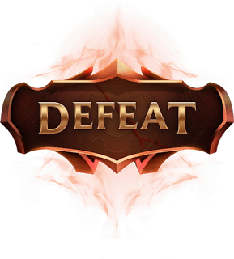

Zaun é um local perigoso, mesmo que Vi tenha nascido e crescido lá, hoje ela faz parte da polícia de Piltover. Isso fez com que ela tivesse muitos inimigos em Zaun, que souberam da sua visita à cidade e decidiram mostrar o que aconteceu aos desertores.